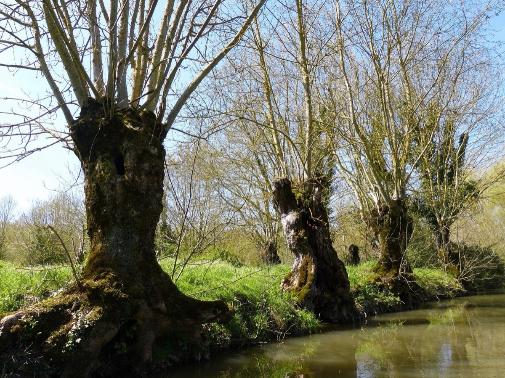
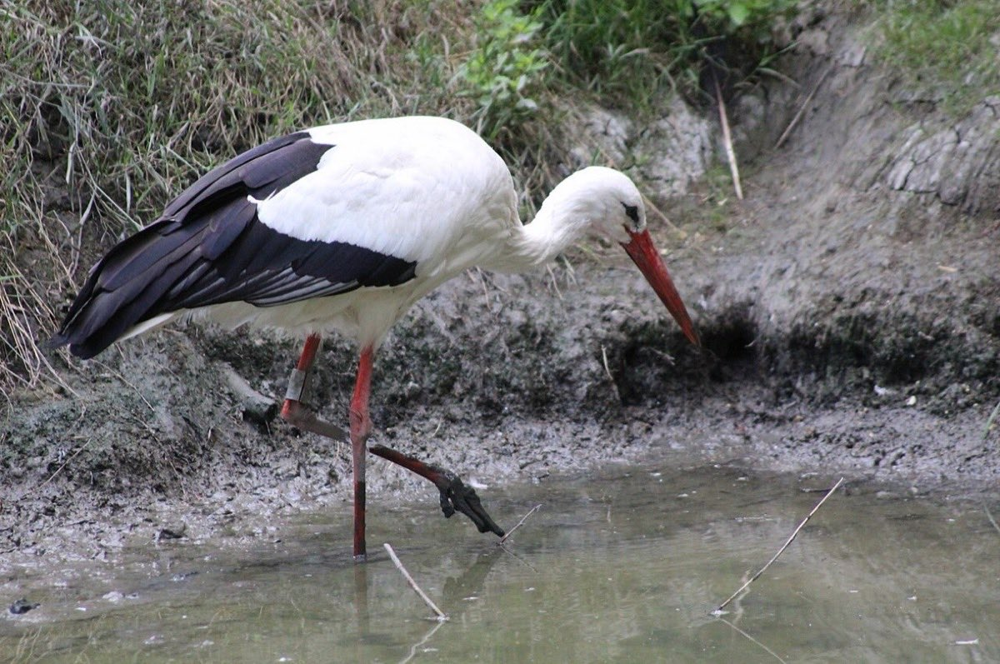
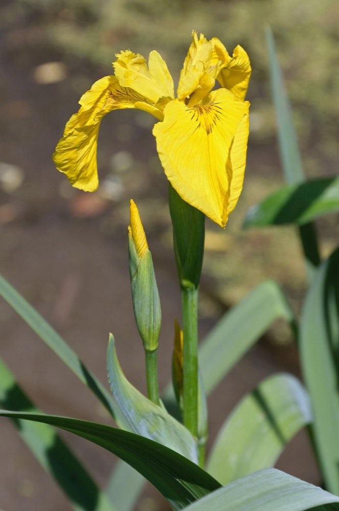
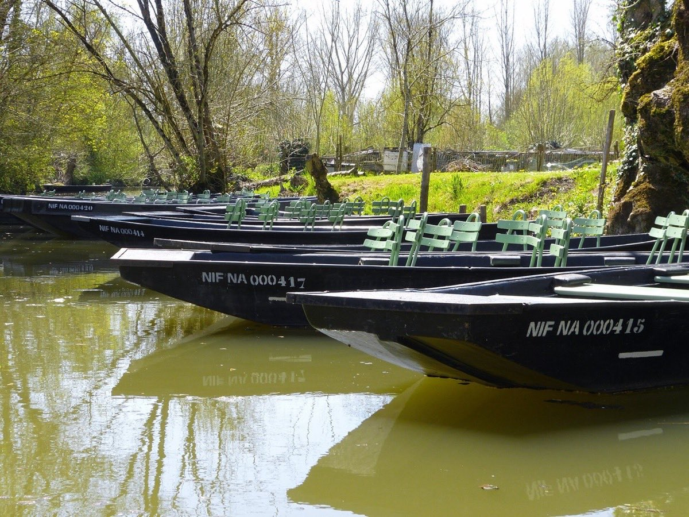
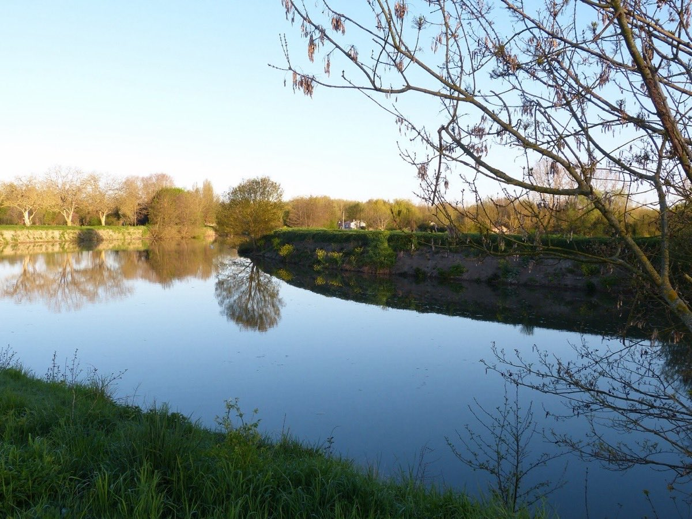
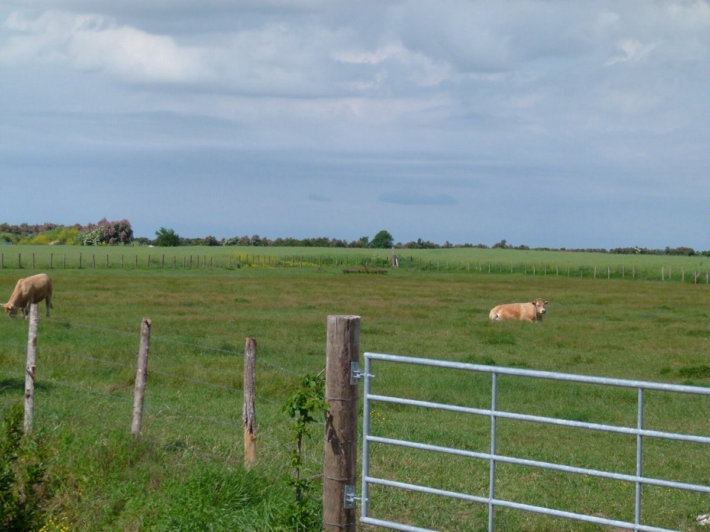
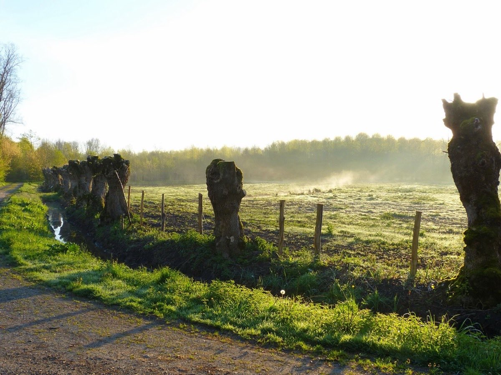

Parc naturel régional du Marais poitevin
Marais Durable réunit des habitants de Cram-Chaban, Courçon, La Laigne, La Grève-sur-Mignon et Saint-Hilaire-la-Palud pour faire connaître, protéger et défendre ce territoire vivant, façonné par l'eau et par des siècles de travail humain.
Un promoteur étudie l'implantation d'éoliennes de près de 200 mètres sur Courçon et Cram-Chaban, à l'intérieur du Parc. Aucune demande d'autorisation n'est déposée : rien n'est joué, et c'est maintenant que la parole des habitants pèse le plus.
Deuxième zone humide de France après la Camargue, le Marais poitevin s'étend de la baie de l'Aiguillon jusqu'aux portes de Niort. Ses canaux, ses prairies inondables et ses alignements de frênes têtards abritent une vie foisonnante — et un mode de vie qu'il nous appartient de transmettre.

Marais mouillé, marais desséché, conches et frênes têtards : un paysage né de la rencontre de l'eau et de la main de l'homme.

Cigognes, hérons, loutres, anguilles, libellules : le marais est une étape majeure sur la voie de migration de la façade atlantique.

Iris des marais, angélique, fritillaire, lentilles d'eau : une flore des milieux humides, précieuse et souvent fragile.




Faire connaître la richesse du marais : ses paysages, ses espèces, son histoire et les savoir-faire qui l'entretiennent.
Protéger ce qui fait sa valeur : l'eau, les prairies humides, les haies et les frênes têtards, la tranquillité des lieux de nidification et de passage.
Défendre le territoire quand un projet lui porte atteinte — avec des arguments sourcés, sans jamais mettre personne en cause.